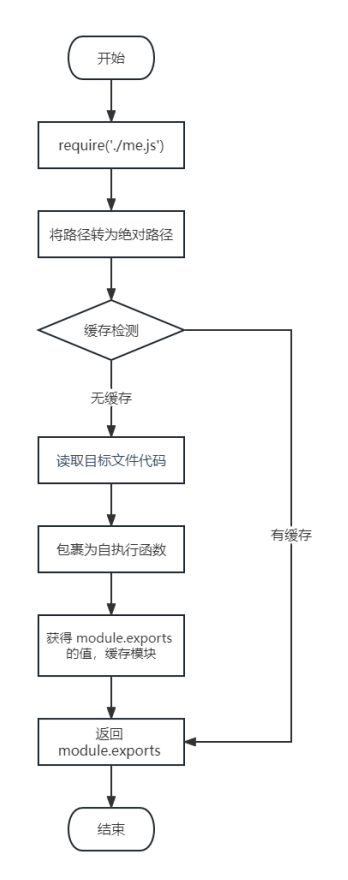

| 什么是模块化与模块 | 将一个复杂的程序文件依据一定规则（规范）拆分成多个文件的过程称之为 模块化 其中拆分出的 每个文件就是一个模块 模块的内部数据是私有的，不过模块可以暴露内部数据以便其他模块使用 |
| 什么是模块化项目 | 编码时是按照模块一个一个编码的， 整个项目就是一个模块化的项目，跟vue组件化开发一样的 |
| 模块化好处 |
|
| 注意事项 | 使用时有几点注意：module.exports 可以暴露 任意 数据 不能使用 exports = value 的形式暴露数据，模块内部 module 与 exports 的隐式关系 exports = module.exports = {} ，require 返回的是目标模块中 module.exports 的值 |
| exports.name = value | 是将value在exports对象里创建同名属性并赋值 |
| 举例解释
不能使用 exports = value 的形式暴露数据 |
exports===module.exports 为true 因为 exports=module.exports={} 但 module.exports可以暴露任何数据，exports不行 因为 require引入直接指向module.exports exports = 'sss' //{} module.exports = 'aaa'// aaa exports.name = value 相当于=> exports=module.exports={name:value} |
| jquery | jQuery 是建立在 JavaScript 基础上的一套工具库(js库)，用于简化常见的编程任务。 jQuery通过提供一系列简化DOM树遍历、事件处理、动画和Ajax交互的方法，使得JavaScript编程更加简单。 它提供了一种更简洁、更一致的方式来编写JavaScript代码，减少了对不同浏览器兼容性的担忧。 |
| json | 定义：JSON是一种轻量级的数据交换格式,易于人阅读和编写，同时也易于机器解析和生成。 用途：JSON常用于Web应用程序中作为数据传输的格式，比如从服务器发送数据到客户端，或反之。 语法：JSON基于JavaScript的一个子集，主要使用对象和数组两种结构来表示数据。JSON只能包含字符串键名的对象和基本类型的值（数字、字符串、布尔值、null），以及数组和嵌套的对象。 |
| require 使用的一些注意事项： |
|
| 关于 json与js的数据格式转换 | JSON.parse(json_object)=>jscode 解析json对象转为jscode JSON.stringify(js_object)=>json形式 转js对象为json形式 具体过程 |
| require 导入 自定义模块 的基本流程 |
|
| 流程图 |  |